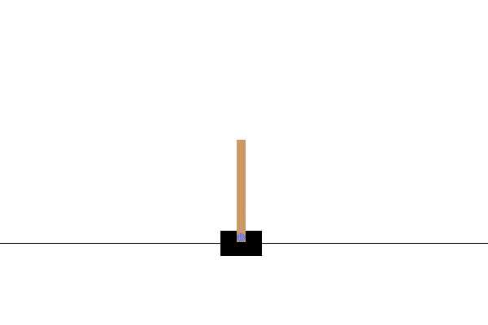

Note
Go to the end to download the full example code.
TorchRL trainer: A DQN example#
Author: Vincent Moens
TorchRL provides a generic Trainer class to handle
your training loop. The trainer executes a nested loop where the outer loop
is the data collection and the inner loop consumes this data or some data
retrieved from the replay buffer to train the model.
At various points in this training loop, hooks can be attached and executed at
given intervals.
In this tutorial, we will be using the trainer class to train a DQN algorithm to solve the CartPole task from scratch.
Main takeaways:
Building a trainer with its essential components: data collector, loss module, replay buffer and optimizer.
Adding hooks to a trainer, such as loggers, target network updaters and such.
The trainer is fully customisable and offers a large set of functionalities.
The tutorial is organised around its construction.
We will be detailing how to build each of the components of the library first,
and then put the pieces together using the Trainer
class.
Along the road, we will also focus on some other aspects of the library:
how to build an environment in TorchRL, including transforms (e.g. data normalization, frame concatenation, resizing and turning to grayscale) and parallel execution. Unlike what we did in the DDPG tutorial, we will normalize the pixels and not the state vector.
how to design a
QValueActorobject, i.e. an actor that estimates the action values and picks up the action with the highest estimated return;how to collect data from your environment efficiently and store them in a replay buffer;
how to use multi-step, a simple preprocessing step for off-policy algorithms;
and finally how to evaluate your model.
Prerequisites: We encourage you to get familiar with torchrl through the PPO tutorial first.
DQN#
DQN (Deep Q-Learning) was the founding work in deep reinforcement learning.
On a high level, the algorithm is quite simple: Q-learning consists in learning a table of state-action values in such a way that, when encountering any particular state, we know which action to pick just by searching for the one with the highest value. This simple setting requires the actions and states to be discrete, otherwise a lookup table cannot be built.
DQN uses a neural network that encodes a map from the state-action space to a value (scalar) space, which amortizes the cost of storing and exploring all the possible state-action combinations: if a state has not been seen in the past, we can still pass it in conjunction with the various actions available through our neural network and get an interpolated value for each of the actions available.
We will solve the classic control problem of the cart pole. From the Gymnasium doc from where this environment is retrieved:

We do not aim at giving a SOTA implementation of the algorithm, but rather to provide a high-level illustration of TorchRL features in the context of this algorithm.
import os
import uuid
import torch
from torch import nn
from torchrl.collectors import Collector, MultiAsyncCollector
from torchrl.data import LazyMemmapStorage, MultiStep, TensorDictReplayBuffer
from torchrl.envs import (
EnvCreator,
ExplorationType,
ParallelEnv,
RewardScaling,
StepCounter,
)
from torchrl.envs.libs.gym import GymEnv
from torchrl.envs.transforms import (
CatFrames,
Compose,
GrayScale,
ObservationNorm,
Resize,
ToTensorImage,
TransformedEnv,
)
from torchrl.modules import DuelingCnnDQNet, EGreedyModule, QValueActor
from torchrl.objectives import DQNLoss, SoftUpdate
from torchrl.record.loggers.csv import CSVLogger
from torchrl.trainers import (
LogScalar,
LogValidationReward,
ReplayBufferTrainer,
Trainer,
UpdateWeights,
)
def is_notebook() -> bool:
try:
shell = get_ipython().__class__.__name__
if shell == "ZMQInteractiveShell":
return True # Jupyter notebook or qtconsole
elif shell == "TerminalInteractiveShell":
return False # Terminal running IPython
else:
return False # Other type (?)
except NameError:
return False # Probably standard Python interpreter
Let’s get started with the various pieces we need for our algorithm:
An environment;
A policy (and related modules that we group under the “model” umbrella);
A data collector, which makes the policy play in the environment and delivers training data;
A replay buffer to store the training data;
A loss module, which computes the objective function to train our policy to maximise the return;
An optimizer, which performs parameter updates based on our loss.
Additional modules include a logger, a recorder (executes the policy in “eval” mode) and a target network updater. With all these components into place, it is easy to see how one could misplace or misuse one component in the training script. The trainer is there to orchestrate everything for you!
Building the environment#
First let’s write a helper function that will output an environment. As usual, the “raw” environment may be too simple to be used in practice and we’ll need some data transformation to expose its output to the policy.
We will be using five transforms:
StepCounterto count the number of steps in each trajectory;ToTensorImagewill convert a[W, H, C]uint8 tensor in a floating point tensor in the[0, 1]space with shape[C, W, H];RewardScalingto reduce the scale of the return;GrayScalewill turn our image into grayscale;Resizewill resize the image in a 64x64 format;CatFrameswill concatenate an arbitrary number of successive frames (N=4) in a single tensor along the channel dimension. This is useful as a single image does not carry information about the motion of the cartpole. Some memory about past observations and actions is needed, either via a recurrent neural network or using a stack of frames.ObservationNormwhich will normalize our observations given some custom summary statistics.
In practice, our environment builder has two arguments:
parallel: determines whether multiple environments have to be run in parallel. We stack the transforms after theParallelEnvto take advantage of vectorization of the operations on device, although this would technically work with every single environment attached to its own set of transforms.obs_norm_sdwill contain the normalizing constants for theObservationNormtransform.
def make_env(
parallel=False,
obs_norm_sd=None,
num_workers=1,
):
if obs_norm_sd is None:
obs_norm_sd = {"standard_normal": True}
if parallel:
def maker():
return GymEnv(
"CartPole-v1",
from_pixels=True,
pixels_only=True,
device=device,
)
base_env = ParallelEnv(
num_workers,
EnvCreator(maker),
# Don't create a sub-process if we have only one worker
serial_for_single=True,
mp_start_method=mp_context,
)
else:
base_env = GymEnv(
"CartPole-v1",
from_pixels=True,
pixels_only=True,
device=device,
)
env = TransformedEnv(
base_env,
Compose(
StepCounter(), # to count the steps of each trajectory
ToTensorImage(),
RewardScaling(loc=0.0, scale=0.1),
GrayScale(),
Resize(64, 64),
CatFrames(4, in_keys=["pixels"], dim=-3),
ObservationNorm(in_keys=["pixels"], **obs_norm_sd),
),
)
return env
Compute normalizing constants#
To normalize images, we don’t want to normalize each pixel independently
with a full [C, W, H] normalizing mask, but with simpler [C, 1, 1]
shaped set of normalizing constants (loc and scale parameters).
We will be using the reduce_dim argument
of init_stats() to instruct which
dimensions must be reduced, and the keep_dims parameter to ensure that
not all dimensions disappear in the process:
def get_norm_stats():
test_env = make_env()
test_env.transform[-1].init_stats(
num_iter=1000, cat_dim=0, reduce_dim=[-1, -2, -4], keep_dims=(-1, -2)
)
obs_norm_sd = test_env.transform[-1].state_dict()
# let's check that normalizing constants have a size of ``[C, 1, 1]`` where
# ``C=4`` (because of :class:`~torchrl.envs.transforms.CatFrames`).
print("state dict of the observation norm:", obs_norm_sd)
test_env.close()
del test_env
return obs_norm_sd
Building the model (Deep Q-network)#
The following function builds a DuelingCnnDQNet
object which is a simple CNN followed by a two-layer MLP. The only trick used
here is that the action values (i.e. left and right action value) are
computed using
where \(\mathbb{v}\) is our vector of action values, \(b\) is a \(\mathbb{R}^n \rightarrow 1\) function and \(v\) is a \(\mathbb{R}^n \rightarrow \mathbb{R}^m\) function, for \(n = \# obs\) and \(m = \# actions\).
Our network is wrapped in a QValueActor,
which will read the state-action
values, pick up the one with the maximum value and write all those results
in the input tensordict.TensorDict.
def make_model(dummy_env):
cnn_kwargs = {
"num_cells": [32, 64, 64],
"kernel_sizes": [6, 4, 3],
"strides": [2, 2, 1],
"activation_class": nn.ELU,
# This can be used to reduce the size of the last layer of the CNN
# "squeeze_output": True,
# "aggregator_class": nn.AdaptiveAvgPool2d,
# "aggregator_kwargs": {"output_size": (1, 1)},
}
mlp_kwargs = {
"depth": 2,
"num_cells": [
64,
64,
],
"activation_class": nn.ELU,
}
net = DuelingCnnDQNet(
dummy_env.action_spec.shape[-1], 1, cnn_kwargs, mlp_kwargs
).to(device)
net.value[-1].bias.data.fill_(init_bias)
actor = QValueActor(net, in_keys=["pixels"], spec=dummy_env.action_spec).to(device)
# init actor: because the model is composed of lazy conv/linear layers,
# we must pass a fake batch of data through it to instantiate them.
tensordict = dummy_env.fake_tensordict()
actor(tensordict)
# we join our actor with an EGreedyModule for data collection
exploration_module = EGreedyModule(
spec=dummy_env.action_spec,
annealing_num_steps=total_frames,
eps_init=eps_greedy_val,
eps_end=eps_greedy_val_env,
)
actor_explore = TensorDictSequential(actor, exploration_module)
return actor, actor_explore
Collecting and storing data#
Replay buffers#
Replay buffers play a central role in off-policy RL algorithms such as DQN. They constitute the dataset we will be sampling from during training.
Here, we will use a regular sampling strategy, although a prioritized RB could improve the performance significantly.
We place the storage on disk using
LazyMemmapStorage class. This
storage is created in a lazy manner: it will only be instantiated once the
first batch of data is passed to it.
The only requirement of this storage is that the data passed to it at write time must always have the same shape.
buffer_scratch_dir = tempfile.TemporaryDirectory().name
def get_replay_buffer(buffer_size, n_optim, batch_size, device):
replay_buffer = TensorDictReplayBuffer(
batch_size=batch_size,
storage=LazyMemmapStorage(buffer_size, scratch_dir=buffer_scratch_dir),
prefetch=n_optim,
transform=lambda td: td.to(device),
)
return replay_buffer
Data collector#
As in PPO and DDPG, we will be using a data collector as a dataloader in the outer loop.
We choose the following configuration: we will be running a series of parallel environments synchronously in parallel in different collectors, themselves running in parallel but asynchronously.
Note
This feature is only available when running the code within the “spawn”
start method of python multiprocessing library. If this tutorial is run
directly as a script (thereby using the “fork” method) we will be using
a regular Collector.
The advantage of this configuration is that we can balance the amount of
compute that is executed in batch with what we want to be executed
asynchronously. We encourage the reader to experiment how the collection
speed is impacted by modifying the number of collectors (ie the number of
environment constructors passed to the collector) and the number of
environment executed in parallel in each collector (controlled by the
num_workers hyperparameter).
Collector’s devices are fully parametrizable through the device (general),
policy_device, env_device and storing_device arguments.
The storing_device argument will modify the
location of the data being collected: if the batches that we are gathering
have a considerable size, we may want to store them on a different location
than the device where the computation is happening. For asynchronous data
collectors such as ours, different storing devices mean that the data that
we collect won’t sit on the same device each time, which is something that
out training loop must account for. For simplicity, we set the devices to
the same value for all sub-collectors.
def get_collector(
stats,
num_collectors,
actor_explore,
frames_per_batch,
total_frames,
device,
):
# We can't use nested child processes with mp_start_method="fork"
if is_fork:
cls = Collector
env_arg = make_env(parallel=True, obs_norm_sd=stats, num_workers=num_workers)
else:
cls = MultiAsyncCollector
env_arg = [
make_env(parallel=True, obs_norm_sd=stats, num_workers=num_workers)
] * num_collectors
data_collector = cls(
env_arg,
policy=actor_explore,
frames_per_batch=frames_per_batch,
total_frames=total_frames,
# this is the default behavior: the collector runs in ``"random"`` (or explorative) mode
exploration_type=ExplorationType.RANDOM,
# We set the all the devices to be identical. Below is an example of
# heterogeneous devices
device=device,
storing_device=device,
split_trajs=False,
postproc=MultiStep(gamma=gamma, n_steps=5),
)
return data_collector
Loss function#
Building our loss function is straightforward: we only need to provide the model and a bunch of hyperparameters to the DQNLoss class.
Target parameters#
Many off-policy RL algorithms use the concept of “target parameters” when it comes to estimate the value of the next state or state-action pair. The target parameters are lagged copies of the model parameters. Because their predictions mismatch those of the current model configuration, they help learning by putting a pessimistic bound on the value being estimated. This is a powerful trick (known as “Double Q-Learning”) that is ubiquitous in similar algorithms.
def get_loss_module(actor, gamma):
loss_module = DQNLoss(actor, delay_value=True)
loss_module.make_value_estimator(gamma=gamma)
target_updater = SoftUpdate(loss_module, eps=0.995)
return loss_module, target_updater
Hyperparameters#
Let’s start with our hyperparameters. The following setting should work well in practice, and the performance of the algorithm should hopefully not be too sensitive to slight variations of these.
is_fork = multiprocessing.get_start_method() == "fork"
device = (
torch.device(0)
if torch.cuda.is_available() and not is_fork
else torch.device("cpu")
)
Optimizer#
# the learning rate of the optimizer
lr = 2e-3
# weight decay
wd = 1e-5
# the beta parameters of Adam
betas = (0.9, 0.999)
# Optimization steps per batch collected (aka UPD or updates per data)
n_optim = 8
DQN parameters#
gamma decay factor
gamma = 0.99
Smooth target network update decay parameter. This loosely corresponds to a 1/tau interval with hard target network update
tau = 0.02
Data collection and replay buffer#
Note
Values to be used for proper training have been commented.
Total frames collected in the environment. In other implementations, the user defines a maximum number of episodes. This is harder to do with our data collectors since they return batches of N collected frames, where N is a constant. However, one can easily get the same restriction on number of episodes by breaking the training loop when a certain number episodes has been collected.
total_frames = 5_000 # 500000
Random frames used to initialize the replay buffer.
init_random_frames = 100 # 1000
Frames in each batch collected.
frames_per_batch = 32 # 128
Frames sampled from the replay buffer at each optimization step
batch_size = 32 # 256
Size of the replay buffer in terms of frames
buffer_size = min(total_frames, 100000)
Number of environments run in parallel in each data collector
num_workers = 2 # 8
num_collectors = 2 # 4
Environment and exploration#
We set the initial and final value of the epsilon factor in Epsilon-greedy exploration. Since our policy is deterministic, exploration is crucial: without it, the only source of randomness would be the environment reset.
eps_greedy_val = 0.1
eps_greedy_val_env = 0.005
To speed up learning, we set the bias of the last layer of our value network to a predefined value (this is not mandatory)
init_bias = 2.0
Note
For fast rendering of the tutorial total_frames hyperparameter
was set to a very low number. To get a reasonable performance, use a greater
value e.g. 500000
Building a Trainer#
TorchRL’s Trainer class constructor takes the
following keyword-only arguments:
collectorloss_moduleoptimizerlogger: A logger can betotal_frames: this parameter defines the lifespan of the trainer.frame_skip: when a frame-skip is used, the collector must be made aware of it in order to accurately count the number of frames collected etc. Making the trainer aware of this parameter is not mandatory but helps to have a fairer comparison between settings where the total number of frames (budget) is fixed but the frame-skip is variable.
stats = get_norm_stats()
test_env = make_env(parallel=False, obs_norm_sd=stats)
# Get model
actor, actor_explore = make_model(test_env)
loss_module, target_net_updater = get_loss_module(actor, gamma)
collector = get_collector(
stats=stats,
num_collectors=num_collectors,
actor_explore=actor_explore,
frames_per_batch=frames_per_batch,
total_frames=total_frames,
device=device,
)
optimizer = torch.optim.Adam(
loss_module.parameters(), lr=lr, weight_decay=wd, betas=betas
)
exp_name = f"dqn_exp_{uuid.uuid1()}"
tmpdir = tempfile.TemporaryDirectory()
logger = CSVLogger(exp_name=exp_name, log_dir=tmpdir.name)
warnings.warn(f"log dir: {logger.experiment.log_dir}")
state dict of the observation norm: OrderedDict([('standard_normal', tensor(True, device='cuda:0')), ('loc', tensor([[[0.9895]],
[[0.9895]],
[[0.9895]],
[[0.9895]]], device='cuda:0')), ('scale', tensor([[[0.0737]],
[[0.0737]],
[[0.0737]],
[[0.0737]]], device='cuda:0'))])
We can control how often the scalars should be logged. Here we set this to a low value as our training loop is short:
log_interval = 500
trainer = Trainer(
collector=collector,
total_frames=total_frames,
frame_skip=1,
loss_module=loss_module,
optimizer=optimizer,
logger=logger,
optim_steps_per_batch=n_optim,
log_interval=log_interval,
)
Registering hooks#
Registering hooks can be achieved in two separate ways:
If the hook has it, the
register()method is the first choice. One just needs to provide the trainer as input and the hook will be registered with a default name at a default location. For some hooks, the registration can be quite complex:ReplayBufferTrainerrequires 3 hooks (extend,sampleandupdate_priority) which can be cumbersome to implement.
buffer_hook = ReplayBufferTrainer(
get_replay_buffer(buffer_size, n_optim, batch_size=batch_size, device=device),
flatten_tensordicts=True,
)
buffer_hook.register(trainer)
weight_updater = UpdateWeights(collector, update_weights_interval=1)
weight_updater.register(trainer)
recorder = LogValidationReward(
record_interval=100, # log every 100 optimization steps
record_frames=1000, # maximum number of frames in the record
frame_skip=1,
policy_exploration=actor_explore,
environment=test_env,
exploration_type=ExplorationType.DETERMINISTIC,
log_keys=[("next", "reward")],
out_keys={("next", "reward"): "rewards"},
log_pbar=True,
)
recorder.register(trainer)
The exploration module epsilon factor is also annealed:
trainer.register_op("post_steps", actor_explore[1].step, frames=frames_per_batch)
Any callable (including
TrainerHookBasesubclasses) can be registered usingregister_op(). In this case, a location must be explicitly passed (). This method gives more control over the location of the hook but it also requires more understanding of the Trainer mechanism. Check the trainer documentation for a detailed description of the trainer hooks.
trainer.register_op("post_optim", target_net_updater.step)
We can log the training rewards too. Note that this is of limited interest with CartPole, as rewards are always 1. The discounted sum of rewards is maximised not by getting higher rewards but by keeping the cart-pole alive for longer. This will be reflected by the total_rewards value displayed in the progress bar.
log_reward = LogScalar(log_pbar=True)
log_reward.register(trainer)
Note
It is possible to link multiple optimizers to the trainer if needed.
In this case, each optimizer will be tied to a field in the loss
dictionary.
Check the OptimizerHook to learn more.
Here we are, ready to train our algorithm! A simple call to
trainer.train() and we’ll be getting our results logged in.
trainer.train()
0%| | 0/5000 [00:00<?, ?it/s]
1%| | 32/5000 [00:04<12:03, 6.86it/s]
('next', 'reward'): 0.3688, ('next', 'reward')_std: 0.1462, rewards: 0.1000, total_rewards: 0.9346: 1%| | 32/5000 [00:04<12:03, 6.86it/s]
('next', 'reward'): 0.3688, ('next', 'reward')_std: 0.1462, rewards: 0.1000, total_rewards: 0.9346: 1%|▏ | 64/5000 [00:04<11:59, 6.86it/s]
('next', 'reward'): 0.3688, ('next', 'reward')_std: 0.1462, rewards: 0.1000, total_rewards: 0.9346: 2%|▏ | 96/5000 [00:04<03:15, 25.03it/s]
('next', 'reward'): 0.3566, ('next', 'reward')_std: 0.1519, rewards: 0.1000, total_rewards: 0.9346: 2%|▏ | 96/5000 [00:04<03:15, 25.03it/s]
('next', 'reward'): 0.3353, ('next', 'reward')_std: 0.1562, rewards: 0.1000, total_rewards: 0.9346: 3%|▎ | 128/5000 [00:04<03:14, 25.03it/s]
('next', 'reward'): 0.3353, ('next', 'reward')_std: 0.1562, rewards: 0.1000, total_rewards: 0.9346: 3%|▎ | 160/5000 [00:05<01:41, 47.88it/s]
('next', 'reward'): 0.3869, ('next', 'reward')_std: 0.1502, rewards: 0.1000, total_rewards: 0.9346: 3%|▎ | 160/5000 [00:05<01:41, 47.88it/s]
('next', 'reward'): 0.3869, ('next', 'reward')_std: 0.1502, rewards: 0.1000, total_rewards: 0.9346: 4%|▍ | 192/5000 [00:05<01:17, 61.79it/s]
('next', 'reward'): 0.3688, ('next', 'reward')_std: 0.1462, rewards: 0.1000, total_rewards: 0.9346: 4%|▍ | 192/5000 [00:05<01:17, 61.79it/s]
('next', 'reward'): 0.3566, ('next', 'reward')_std: 0.1519, rewards: 0.1000, total_rewards: 0.9346: 4%|▍ | 224/5000 [00:05<01:17, 61.79it/s]
('next', 'reward'): 0.3566, ('next', 'reward')_std: 0.1519, rewards: 0.1000, total_rewards: 0.9346: 5%|▌ | 256/5000 [00:05<00:49, 95.56it/s]
('next', 'reward'): 0.3232, ('next', 'reward')_std: 0.1549, rewards: 0.1000, total_rewards: 0.9346: 5%|▌ | 256/5000 [00:05<00:49, 95.56it/s]
('next', 'reward'): 0.3778, ('next', 'reward')_std: 0.1485, rewards: 0.1000, total_rewards: 0.9346: 6%|▌ | 288/5000 [00:05<00:49, 95.56it/s]
('next', 'reward'): 0.3778, ('next', 'reward')_std: 0.1485, rewards: 0.1000, total_rewards: 0.9346: 6%|▋ | 320/5000 [00:05<00:35, 130.90it/s]
('next', 'reward'): 0.3991, ('next', 'reward')_std: 0.1374, rewards: 0.1000, total_rewards: 0.9346: 6%|▋ | 320/5000 [00:05<00:35, 130.90it/s]
('next', 'reward'): 0.3566, ('next', 'reward')_std: 0.1519, rewards: 0.1000, total_rewards: 0.9346: 7%|▋ | 352/5000 [00:05<00:35, 130.90it/s]
('next', 'reward'): 0.3566, ('next', 'reward')_std: 0.1519, rewards: 0.1000, total_rewards: 0.9346: 8%|▊ | 384/5000 [00:05<00:27, 165.43it/s]
('next', 'reward'): 0.3899, ('next', 'reward')_std: 0.1473, rewards: 0.1000, total_rewards: 0.9346: 8%|▊ | 384/5000 [00:05<00:27, 165.43it/s]
('next', 'reward'): 0.3899, ('next', 'reward')_std: 0.1473, rewards: 0.1000, total_rewards: 0.9346: 8%|▊ | 416/5000 [00:05<00:25, 182.85it/s]
('next', 'reward'): 0.3718, ('next', 'reward')_std: 0.1477, rewards: 0.1000, total_rewards: 0.9346: 8%|▊ | 416/5000 [00:05<00:25, 182.85it/s]
('next', 'reward'): 0.3991, ('next', 'reward')_std: 0.1374, rewards: 0.1000, total_rewards: 0.9346: 9%|▉ | 448/5000 [00:05<00:24, 182.85it/s]
('next', 'reward'): 0.3991, ('next', 'reward')_std: 0.1374, rewards: 0.1000, total_rewards: 0.9346: 10%|▉ | 480/5000 [00:06<00:20, 219.18it/s]
('next', 'reward'): 0.3838, ('next', 'reward')_std: 0.1552, rewards: 0.1000, total_rewards: 0.9346: 10%|▉ | 480/5000 [00:06<00:20, 219.18it/s]
('next', 'reward'): 0.3415, ('next', 'reward')_std: 0.1504, rewards: 0.1000, total_rewards: 0.9346: 10%|█ | 512/5000 [00:06<00:20, 219.18it/s]
('next', 'reward'): 0.3415, ('next', 'reward')_std: 0.1504, rewards: 0.1000, total_rewards: 0.9346: 11%|█ | 544/5000 [00:06<00:17, 250.72it/s]
('next', 'reward'): 0.3991, ('next', 'reward')_std: 0.1374, rewards: 0.1000, total_rewards: 0.9346: 11%|█ | 544/5000 [00:06<00:17, 250.72it/s]
('next', 'reward'): 0.4021, ('next', 'reward')_std: 0.1384, rewards: 0.1000, total_rewards: 0.9346: 12%|█▏ | 576/5000 [00:06<00:17, 250.72it/s]
('next', 'reward'): 0.4021, ('next', 'reward')_std: 0.1384, rewards: 0.1000, total_rewards: 0.9346: 12%|█▏ | 608/5000 [00:06<00:16, 273.18it/s]
('next', 'reward'): 0.3778, ('next', 'reward')_std: 0.1485, rewards: 0.1000, total_rewards: 0.9346: 12%|█▏ | 608/5000 [00:06<00:16, 273.18it/s]
('next', 'reward'): 0.4295, ('next', 'reward')_std: 0.1204, rewards: 0.1000, total_rewards: 0.9346: 13%|█▎ | 640/5000 [00:06<00:15, 273.18it/s]
('next', 'reward'): 0.4295, ('next', 'reward')_std: 0.1204, rewards: 0.1000, total_rewards: 0.9346: 13%|█▎ | 672/5000 [00:06<00:14, 293.36it/s]
('next', 'reward'): 0.4295, ('next', 'reward')_std: 0.1204, rewards: 0.1000, total_rewards: 0.9346: 13%|█▎ | 672/5000 [00:06<00:14, 293.36it/s]
('next', 'reward'): 0.3991, ('next', 'reward')_std: 0.1374, rewards: 0.1000, total_rewards: 0.9346: 14%|█▍ | 704/5000 [00:06<00:14, 293.36it/s]
('next', 'reward'): 0.3991, ('next', 'reward')_std: 0.1374, rewards: 0.1000, total_rewards: 0.9346: 15%|█▍ | 736/5000 [00:06<00:13, 304.82it/s]
('next', 'reward'): 0.4173, ('next', 'reward')_std: 0.1331, rewards: 0.1000, total_rewards: 0.9346: 15%|█▍ | 736/5000 [00:06<00:13, 304.82it/s]
('next', 'reward'): 0.3869, ('next', 'reward')_std: 0.1502, rewards: 0.1000, total_rewards: 0.9346: 15%|█▌ | 768/5000 [00:06<00:13, 304.82it/s]
('next', 'reward'): 0.3869, ('next', 'reward')_std: 0.1502, rewards: 0.1000, total_rewards: 0.9346: 16%|█▌ | 800/5000 [00:06<00:13, 313.82it/s]
('next', 'reward'): 0.3991, ('next', 'reward')_std: 0.1374, rewards: 0.1000, total_rewards: 0.9346: 16%|█▌ | 800/5000 [00:06<00:13, 313.82it/s]
('next', 'reward'): 0.4295, ('next', 'reward')_std: 0.1204, rewards: 0.1000, total_rewards: 0.9346: 17%|█▋ | 832/5000 [00:07<00:13, 313.82it/s]
('next', 'reward'): 0.4295, ('next', 'reward')_std: 0.1204, rewards: 0.1000, total_rewards: 0.9346: 17%|█▋ | 864/5000 [00:07<00:12, 323.77it/s]
('next', 'reward'): 0.4021, ('next', 'reward')_std: 0.1384, rewards: 0.1000, total_rewards: 0.9346: 17%|█▋ | 864/5000 [00:07<00:12, 323.77it/s]
('next', 'reward'): 0.3718, ('next', 'reward')_std: 0.1477, rewards: 0.1000, total_rewards: 0.9346: 18%|█▊ | 896/5000 [00:07<00:12, 323.77it/s]
('next', 'reward'): 0.3718, ('next', 'reward')_std: 0.1477, rewards: 0.1000, total_rewards: 0.9346: 19%|█▊ | 928/5000 [00:07<00:12, 331.92it/s]
('next', 'reward'): 0.4295, ('next', 'reward')_std: 0.1204, rewards: 0.1000, total_rewards: 0.9346: 19%|█▊ | 928/5000 [00:07<00:12, 331.92it/s]
('next', 'reward'): 0.3688, ('next', 'reward')_std: 0.1462, rewards: 0.1000, total_rewards: 0.9346: 19%|█▉ | 960/5000 [00:07<00:12, 331.92it/s]
('next', 'reward'): 0.3688, ('next', 'reward')_std: 0.1462, rewards: 0.1000, total_rewards: 0.9346: 20%|█▉ | 992/5000 [00:07<00:11, 335.73it/s]
('next', 'reward'): 0.3688, ('next', 'reward')_std: 0.1462, rewards: 0.1000, total_rewards: 0.9346: 20%|█▉ | 992/5000 [00:07<00:11, 335.73it/s]
('next', 'reward'): 0.4295, ('next', 'reward')_std: 0.1204, rewards: 0.1000, total_rewards: 0.9346: 20%|██ | 1024/5000 [00:07<00:11, 335.73it/s]
('next', 'reward'): 0.4295, ('next', 'reward')_std: 0.1204, rewards: 0.1000, total_rewards: 0.9346: 21%|██ | 1056/5000 [00:07<00:11, 339.58it/s]
('next', 'reward'): 0.4173, ('next', 'reward')_std: 0.1331, rewards: 0.1000, total_rewards: 0.9346: 21%|██ | 1056/5000 [00:07<00:11, 339.58it/s]
('next', 'reward'): 0.4295, ('next', 'reward')_std: 0.1204, rewards: 0.1000, total_rewards: 0.9346: 22%|██▏ | 1088/5000 [00:07<00:11, 339.58it/s]
('next', 'reward'): 0.4295, ('next', 'reward')_std: 0.1204, rewards: 0.1000, total_rewards: 0.9346: 22%|██▏ | 1120/5000 [00:07<00:11, 343.23it/s]
('next', 'reward'): 0.4295, ('next', 'reward')_std: 0.1204, rewards: 0.1000, total_rewards: 0.9346: 22%|██▏ | 1120/5000 [00:07<00:11, 343.23it/s]
('next', 'reward'): 0.4173, ('next', 'reward')_std: 0.1331, rewards: 0.1000, total_rewards: 0.9346: 23%|██▎ | 1152/5000 [00:07<00:11, 343.23it/s]
('next', 'reward'): 0.4173, ('next', 'reward')_std: 0.1331, rewards: 0.1000, total_rewards: 0.9346: 24%|██▎ | 1184/5000 [00:08<00:11, 338.34it/s]
('next', 'reward'): 0.3991, ('next', 'reward')_std: 0.1374, rewards: 0.1000, total_rewards: 0.9346: 24%|██▎ | 1184/5000 [00:08<00:11, 338.34it/s]
('next', 'reward'): 0.4173, ('next', 'reward')_std: 0.1331, rewards: 0.1000, total_rewards: 0.9346: 24%|██▍ | 1216/5000 [00:08<00:11, 338.34it/s]
('next', 'reward'): 0.4173, ('next', 'reward')_std: 0.1331, rewards: 0.1000, total_rewards: 0.9346: 25%|██▍ | 1248/5000 [00:08<00:11, 338.10it/s]
('next', 'reward'): 0.4082, ('next', 'reward')_std: 0.1378, rewards: 0.1000, total_rewards: 0.9346: 25%|██▍ | 1248/5000 [00:08<00:11, 338.10it/s]
('next', 'reward'): 0.4295, ('next', 'reward')_std: 0.1204, rewards: 0.1000, total_rewards: 0.9346: 26%|██▌ | 1280/5000 [00:08<00:11, 338.10it/s]
('next', 'reward'): 0.4295, ('next', 'reward')_std: 0.1204, rewards: 0.1000, total_rewards: 0.9346: 26%|██▌ | 1312/5000 [00:08<00:10, 338.74it/s]
('next', 'reward'): 0.4295, ('next', 'reward')_std: 0.1204, rewards: 0.1000, total_rewards: 0.9346: 26%|██▌ | 1312/5000 [00:08<00:10, 338.74it/s]
('next', 'reward'): 0.4295, ('next', 'reward')_std: 0.1204, rewards: 0.1000, total_rewards: 0.9346: 27%|██▋ | 1344/5000 [00:08<00:10, 338.74it/s]
('next', 'reward'): 0.4295, ('next', 'reward')_std: 0.1204, rewards: 0.1000, total_rewards: 0.9346: 28%|██▊ | 1376/5000 [00:08<00:10, 340.35it/s]
('next', 'reward'): 0.3991, ('next', 'reward')_std: 0.1374, rewards: 0.1000, total_rewards: 0.9346: 28%|██▊ | 1376/5000 [00:08<00:10, 340.35it/s]
('next', 'reward'): 0.3991, ('next', 'reward')_std: 0.1374, rewards: 0.1000, total_rewards: 0.9346: 28%|██▊ | 1408/5000 [00:08<00:10, 340.35it/s]
('next', 'reward'): 0.3991, ('next', 'reward')_std: 0.1374, rewards: 0.1000, total_rewards: 0.9346: 29%|██▉ | 1440/5000 [00:08<00:10, 341.85it/s]
('next', 'reward'): 0.4295, ('next', 'reward')_std: 0.1204, rewards: 0.1000, total_rewards: 0.9346: 29%|██▉ | 1440/5000 [00:08<00:10, 341.85it/s]
('next', 'reward'): 0.3991, ('next', 'reward')_std: 0.1374, rewards: 0.1000, total_rewards: 0.9346: 29%|██▉ | 1472/5000 [00:08<00:10, 341.85it/s]
('next', 'reward'): 0.3991, ('next', 'reward')_std: 0.1374, rewards: 0.1000, total_rewards: 0.9346: 30%|███ | 1504/5000 [00:09<00:10, 345.30it/s]
('next', 'reward'): 0.3688, ('next', 'reward')_std: 0.1462, rewards: 0.1000, total_rewards: 0.9346: 30%|███ | 1504/5000 [00:09<00:10, 345.30it/s]
('next', 'reward'): 0.4295, ('next', 'reward')_std: 0.1204, rewards: 0.1000, total_rewards: 0.9346: 31%|███ | 1536/5000 [00:09<00:10, 345.30it/s]
('next', 'reward'): 0.4295, ('next', 'reward')_std: 0.1204, rewards: 0.1000, total_rewards: 0.9346: 31%|███▏ | 1568/5000 [00:09<00:09, 348.26it/s]
('next', 'reward'): 0.4295, ('next', 'reward')_std: 0.1204, rewards: 0.1000, total_rewards: 0.9346: 31%|███▏ | 1568/5000 [00:09<00:09, 348.26it/s]
('next', 'reward'): 0.4295, ('next', 'reward')_std: 0.1204, rewards: 0.1000, total_rewards: 0.9346: 32%|███▏ | 1600/5000 [00:09<00:09, 348.26it/s]
('next', 'reward'): 0.4295, ('next', 'reward')_std: 0.1204, rewards: 0.1000, total_rewards: 0.9346: 33%|███▎ | 1632/5000 [00:09<00:09, 350.36it/s]
('next', 'reward'): 0.4295, ('next', 'reward')_std: 0.1204, rewards: 0.1000, total_rewards: 0.9346: 33%|███▎ | 1632/5000 [00:09<00:09, 350.36it/s]
('next', 'reward'): 0.3688, ('next', 'reward')_std: 0.1462, rewards: 0.1000, total_rewards: 0.9346: 33%|███▎ | 1664/5000 [00:09<00:09, 350.36it/s]
('next', 'reward'): 0.3688, ('next', 'reward')_std: 0.1462, rewards: 0.1000, total_rewards: 0.9346: 34%|███▍ | 1696/5000 [00:09<00:09, 348.73it/s]
('next', 'reward'): 0.4295, ('next', 'reward')_std: 0.1204, rewards: 0.1000, total_rewards: 0.9346: 34%|███▍ | 1696/5000 [00:09<00:09, 348.73it/s]
('next', 'reward'): 0.4295, ('next', 'reward')_std: 0.1204, rewards: 0.1000, total_rewards: 0.9346: 35%|███▍ | 1728/5000 [00:09<00:09, 348.73it/s]
('next', 'reward'): 0.4295, ('next', 'reward')_std: 0.1204, rewards: 0.1000, total_rewards: 0.9346: 35%|███▌ | 1760/5000 [00:09<00:09, 346.05it/s]
('next', 'reward'): 0.3991, ('next', 'reward')_std: 0.1374, rewards: 0.1000, total_rewards: 0.9346: 35%|███▌ | 1760/5000 [00:09<00:09, 346.05it/s]
('next', 'reward'): 0.4295, ('next', 'reward')_std: 0.1204, rewards: 0.1000, total_rewards: 0.9346: 36%|███▌ | 1792/5000 [00:09<00:09, 346.05it/s]
('next', 'reward'): 0.4295, ('next', 'reward')_std: 0.1204, rewards: 0.1000, total_rewards: 0.9346: 36%|███▋ | 1824/5000 [00:09<00:09, 345.73it/s]
('next', 'reward'): 0.4295, ('next', 'reward')_std: 0.1204, rewards: 0.1000, total_rewards: 0.9346: 36%|███▋ | 1824/5000 [00:09<00:09, 345.73it/s]
('next', 'reward'): 0.4295, ('next', 'reward')_std: 0.1204, rewards: 0.1000, total_rewards: 0.9346: 37%|███▋ | 1856/5000 [00:10<00:09, 345.73it/s]
('next', 'reward'): 0.4295, ('next', 'reward')_std: 0.1204, rewards: 0.1000, total_rewards: 0.9346: 38%|███▊ | 1888/5000 [00:10<00:08, 347.46it/s]
('next', 'reward'): 0.3991, ('next', 'reward')_std: 0.1374, rewards: 0.1000, total_rewards: 0.9346: 38%|███▊ | 1888/5000 [00:10<00:08, 347.46it/s]
('next', 'reward'): 0.3991, ('next', 'reward')_std: 0.1374, rewards: 0.1000, total_rewards: 0.9346: 38%|███▊ | 1920/5000 [00:10<00:08, 347.46it/s]
('next', 'reward'): 0.3991, ('next', 'reward')_std: 0.1374, rewards: 0.1000, total_rewards: 0.9346: 39%|███▉ | 1952/5000 [00:10<00:08, 348.10it/s]
('next', 'reward'): 0.4173, ('next', 'reward')_std: 0.1331, rewards: 0.1000, total_rewards: 0.9346: 39%|███▉ | 1952/5000 [00:10<00:08, 348.10it/s]
('next', 'reward'): 0.4295, ('next', 'reward')_std: 0.1204, rewards: 0.1000, total_rewards: 0.9346: 40%|███▉ | 1984/5000 [00:10<00:08, 348.10it/s]
('next', 'reward'): 0.4295, ('next', 'reward')_std: 0.1204, rewards: 0.1000, total_rewards: 0.9346: 40%|████ | 2016/5000 [00:10<00:08, 349.45it/s]
('next', 'reward'): 0.4295, ('next', 'reward')_std: 0.1204, rewards: 0.1000, total_rewards: 0.9346: 40%|████ | 2016/5000 [00:10<00:08, 349.45it/s]
('next', 'reward'): 0.4295, ('next', 'reward')_std: 0.1204, rewards: 0.1000, total_rewards: 0.9346: 41%|████ | 2048/5000 [00:10<00:08, 349.45it/s]
('next', 'reward'): 0.4295, ('next', 'reward')_std: 0.1204, rewards: 0.1000, total_rewards: 0.9346: 42%|████▏ | 2080/5000 [00:10<00:08, 351.87it/s]
('next', 'reward'): 0.4295, ('next', 'reward')_std: 0.1204, rewards: 0.1000, total_rewards: 0.9346: 42%|████▏ | 2080/5000 [00:10<00:08, 351.87it/s]
('next', 'reward'): 0.3688, ('next', 'reward')_std: 0.1462, rewards: 0.1000, total_rewards: 0.9346: 42%|████▏ | 2112/5000 [00:10<00:08, 351.87it/s]
('next', 'reward'): 0.3688, ('next', 'reward')_std: 0.1462, rewards: 0.1000, total_rewards: 0.9346: 43%|████▎ | 2144/5000 [00:10<00:08, 354.61it/s]
('next', 'reward'): 0.4173, ('next', 'reward')_std: 0.1331, rewards: 0.1000, total_rewards: 0.9346: 43%|████▎ | 2144/5000 [00:10<00:08, 354.61it/s]
('next', 'reward'): 0.4295, ('next', 'reward')_std: 0.1204, rewards: 0.1000, total_rewards: 0.9346: 44%|████▎ | 2176/5000 [00:10<00:07, 354.61it/s]
('next', 'reward'): 0.4295, ('next', 'reward')_std: 0.1204, rewards: 0.1000, total_rewards: 0.9346: 44%|████▍ | 2208/5000 [00:11<00:07, 352.12it/s]
('next', 'reward'): 0.4173, ('next', 'reward')_std: 0.1331, rewards: 0.1000, total_rewards: 0.9346: 44%|████▍ | 2208/5000 [00:11<00:07, 352.12it/s]
('next', 'reward'): 0.3991, ('next', 'reward')_std: 0.1374, rewards: 0.1000, total_rewards: 0.9346: 45%|████▍ | 2240/5000 [00:11<00:07, 352.12it/s]
('next', 'reward'): 0.3991, ('next', 'reward')_std: 0.1374, rewards: 0.1000, total_rewards: 0.9346: 45%|████▌ | 2272/5000 [00:11<00:07, 352.93it/s]
('next', 'reward'): 0.4295, ('next', 'reward')_std: 0.1204, rewards: 0.1000, total_rewards: 0.9346: 45%|████▌ | 2272/5000 [00:11<00:07, 352.93it/s]
('next', 'reward'): 0.3991, ('next', 'reward')_std: 0.1374, rewards: 0.1000, total_rewards: 0.9346: 46%|████▌ | 2304/5000 [00:11<00:07, 352.93it/s]
('next', 'reward'): 0.3991, ('next', 'reward')_std: 0.1374, rewards: 0.1000, total_rewards: 0.9346: 47%|████▋ | 2336/5000 [00:11<00:07, 353.82it/s]
('next', 'reward'): 0.3991, ('next', 'reward')_std: 0.1374, rewards: 0.1000, total_rewards: 0.9346: 47%|████▋ | 2336/5000 [00:11<00:07, 353.82it/s]
('next', 'reward'): 0.4295, ('next', 'reward')_std: 0.1204, rewards: 0.1000, total_rewards: 0.9346: 47%|████▋ | 2368/5000 [00:11<00:07, 353.82it/s]
('next', 'reward'): 0.4295, ('next', 'reward')_std: 0.1204, rewards: 0.1000, total_rewards: 0.9346: 48%|████▊ | 2400/5000 [00:11<00:07, 355.06it/s]
('next', 'reward'): 0.3991, ('next', 'reward')_std: 0.1374, rewards: 0.1000, total_rewards: 0.9346: 48%|████▊ | 2400/5000 [00:11<00:07, 355.06it/s]
('next', 'reward'): 0.4295, ('next', 'reward')_std: 0.1204, rewards: 0.1000, total_rewards: 0.9346: 49%|████▊ | 2432/5000 [00:11<00:07, 355.06it/s]
('next', 'reward'): 0.4295, ('next', 'reward')_std: 0.1204, rewards: 0.1000, total_rewards: 0.9346: 49%|████▉ | 2464/5000 [00:11<00:07, 354.66it/s]
('next', 'reward'): 0.4295, ('next', 'reward')_std: 0.1204, rewards: 0.1000, total_rewards: 0.9346: 49%|████▉ | 2464/5000 [00:11<00:07, 354.66it/s]
('next', 'reward'): 0.3991, ('next', 'reward')_std: 0.1374, rewards: 0.1000, total_rewards: 0.9346: 50%|████▉ | 2496/5000 [00:11<00:07, 354.66it/s]
('next', 'reward'): 0.3991, ('next', 'reward')_std: 0.1374, rewards: 0.1000, total_rewards: 0.9346: 51%|█████ | 2528/5000 [00:11<00:07, 351.67it/s]
('next', 'reward'): 0.3991, ('next', 'reward')_std: 0.1374, rewards: 0.1000, total_rewards: 0.9346: 51%|█████ | 2528/5000 [00:11<00:07, 351.67it/s]
('next', 'reward'): 0.4295, ('next', 'reward')_std: 0.1204, rewards: 0.1000, total_rewards: 0.9346: 51%|█████ | 2560/5000 [00:12<00:06, 351.67it/s]
('next', 'reward'): 0.4295, ('next', 'reward')_std: 0.1204, rewards: 0.1000, total_rewards: 0.9346: 52%|█████▏ | 2592/5000 [00:12<00:06, 352.91it/s]
('next', 'reward'): 0.4295, ('next', 'reward')_std: 0.1204, rewards: 0.1000, total_rewards: 0.9346: 52%|█████▏ | 2592/5000 [00:12<00:06, 352.91it/s]
('next', 'reward'): 0.4082, ('next', 'reward')_std: 0.1378, rewards: 0.1000, total_rewards: 0.9346: 52%|█████▏ | 2624/5000 [00:12<00:06, 352.91it/s]
('next', 'reward'): 0.4082, ('next', 'reward')_std: 0.1378, rewards: 0.1000, total_rewards: 0.9346: 53%|█████▎ | 2656/5000 [00:12<00:06, 352.74it/s]
('next', 'reward'): 0.3991, ('next', 'reward')_std: 0.1374, rewards: 0.1000, total_rewards: 0.9346: 53%|█████▎ | 2656/5000 [00:12<00:06, 352.74it/s]
('next', 'reward'): 0.4295, ('next', 'reward')_std: 0.1204, rewards: 0.1000, total_rewards: 0.9346: 54%|█████▍ | 2688/5000 [00:12<00:06, 352.74it/s]
('next', 'reward'): 0.4295, ('next', 'reward')_std: 0.1204, rewards: 0.1000, total_rewards: 0.9346: 54%|█████▍ | 2720/5000 [00:12<00:06, 350.42it/s]
('next', 'reward'): 0.3991, ('next', 'reward')_std: 0.1374, rewards: 0.1000, total_rewards: 0.9346: 54%|█████▍ | 2720/5000 [00:12<00:06, 350.42it/s]
('next', 'reward'): 0.3991, ('next', 'reward')_std: 0.1374, rewards: 0.1000, total_rewards: 0.9346: 55%|█████▌ | 2752/5000 [00:12<00:06, 350.42it/s]
('next', 'reward'): 0.3991, ('next', 'reward')_std: 0.1374, rewards: 0.1000, total_rewards: 0.9346: 56%|█████▌ | 2784/5000 [00:12<00:06, 352.43it/s]
('next', 'reward'): 0.4295, ('next', 'reward')_std: 0.1204, rewards: 0.1000, total_rewards: 0.9346: 56%|█████▌ | 2784/5000 [00:12<00:06, 352.43it/s]
('next', 'reward'): 0.4295, ('next', 'reward')_std: 0.1204, rewards: 0.1000, total_rewards: 0.9346: 56%|█████▋ | 2816/5000 [00:12<00:06, 352.43it/s]
('next', 'reward'): 0.4295, ('next', 'reward')_std: 0.1204, rewards: 0.1000, total_rewards: 0.9346: 57%|█████▋ | 2848/5000 [00:12<00:06, 351.50it/s]
('next', 'reward'): 0.4295, ('next', 'reward')_std: 0.1204, rewards: 0.1000, total_rewards: 0.9346: 57%|█████▋ | 2848/5000 [00:12<00:06, 351.50it/s]
('next', 'reward'): 0.4295, ('next', 'reward')_std: 0.1204, rewards: 0.1000, total_rewards: 0.9346: 58%|█████▊ | 2880/5000 [00:12<00:06, 351.50it/s]
('next', 'reward'): 0.4295, ('next', 'reward')_std: 0.1204, rewards: 0.1000, total_rewards: 0.9346: 58%|█████▊ | 2912/5000 [00:13<00:05, 355.26it/s]
('next', 'reward'): 0.4295, ('next', 'reward')_std: 0.1204, rewards: 0.1000, total_rewards: 0.9346: 58%|█████▊ | 2912/5000 [00:13<00:05, 355.26it/s]
('next', 'reward'): 0.4021, ('next', 'reward')_std: 0.1384, rewards: 0.1000, total_rewards: 0.9346: 59%|█████▉ | 2944/5000 [00:13<00:05, 355.26it/s]
('next', 'reward'): 0.4021, ('next', 'reward')_std: 0.1384, rewards: 0.1000, total_rewards: 0.9346: 60%|█████▉ | 2976/5000 [00:13<00:05, 352.50it/s]
('next', 'reward'): 0.4295, ('next', 'reward')_std: 0.1204, rewards: 0.1000, total_rewards: 0.9346: 60%|█████▉ | 2976/5000 [00:13<00:05, 352.50it/s]
('next', 'reward'): 0.4082, ('next', 'reward')_std: 0.1378, rewards: 0.1000, total_rewards: 0.9346: 60%|██████ | 3008/5000 [00:13<00:05, 352.50it/s]
('next', 'reward'): 0.4082, ('next', 'reward')_std: 0.1378, rewards: 0.1000, total_rewards: 0.9346: 61%|██████ | 3040/5000 [00:13<00:05, 349.35it/s]
('next', 'reward'): 0.4051, ('next', 'reward')_std: 0.1437, rewards: 0.1000, total_rewards: 0.9346: 61%|██████ | 3040/5000 [00:13<00:05, 349.35it/s]
('next', 'reward'): 0.4295, ('next', 'reward')_std: 0.1204, rewards: 0.1000, total_rewards: 0.9346: 61%|██████▏ | 3072/5000 [00:13<00:05, 349.35it/s]
('next', 'reward'): 0.4295, ('next', 'reward')_std: 0.1204, rewards: 0.1000, total_rewards: 0.9346: 62%|██████▏ | 3104/5000 [00:13<00:05, 352.08it/s]
('next', 'reward'): 0.4295, ('next', 'reward')_std: 0.1204, rewards: 0.1000, total_rewards: 0.9346: 62%|██████▏ | 3104/5000 [00:13<00:05, 352.08it/s]
('next', 'reward'): 0.4295, ('next', 'reward')_std: 0.1204, rewards: 0.1000, total_rewards: 0.9346: 63%|██████▎ | 3136/5000 [00:13<00:05, 352.08it/s]
('next', 'reward'): 0.4295, ('next', 'reward')_std: 0.1204, rewards: 0.1000, total_rewards: 0.9346: 63%|██████▎ | 3168/5000 [00:13<00:05, 351.74it/s]
('next', 'reward'): 0.3991, ('next', 'reward')_std: 0.1374, rewards: 0.1000, total_rewards: 0.9346: 63%|██████▎ | 3168/5000 [00:13<00:05, 351.74it/s]
('next', 'reward'): 0.4295, ('next', 'reward')_std: 0.1204, rewards: 0.1000, total_rewards: 0.9346: 64%|██████▍ | 3200/5000 [00:13<00:05, 351.74it/s]
('next', 'reward'): 0.4295, ('next', 'reward')_std: 0.1204, rewards: 0.1000, total_rewards: 0.9346: 65%|██████▍ | 3232/5000 [00:17<00:37, 47.40it/s]
('next', 'reward'): 0.4295, ('next', 'reward')_std: 0.1204, rewards: 0.1000, total_rewards: 9.0909: 65%|██████▍ | 3232/5000 [00:17<00:37, 47.40it/s]
('next', 'reward'): 0.4082, ('next', 'reward')_std: 0.1378, rewards: 0.1000, total_rewards: 9.0909: 65%|██████▌ | 3264/5000 [00:17<00:36, 47.40it/s]
('next', 'reward'): 0.4082, ('next', 'reward')_std: 0.1378, rewards: 0.1000, total_rewards: 9.0909: 66%|██████▌ | 3296/5000 [00:18<00:26, 63.89it/s]
('next', 'reward'): 0.4295, ('next', 'reward')_std: 0.1204, rewards: 0.1000, total_rewards: 9.0909: 66%|██████▌ | 3296/5000 [00:18<00:26, 63.89it/s]
('next', 'reward'): 0.4295, ('next', 'reward')_std: 0.1204, rewards: 0.1000, total_rewards: 9.0909: 67%|██████▋ | 3328/5000 [00:18<00:26, 63.89it/s]
('next', 'reward'): 0.4295, ('next', 'reward')_std: 0.1204, rewards: 0.1000, total_rewards: 9.0909: 67%|██████▋ | 3360/5000 [00:18<00:19, 84.48it/s]
('next', 'reward'): 0.3991, ('next', 'reward')_std: 0.1374, rewards: 0.1000, total_rewards: 9.0909: 67%|██████▋ | 3360/5000 [00:18<00:19, 84.48it/s]
('next', 'reward'): 0.3991, ('next', 'reward')_std: 0.1374, rewards: 0.1000, total_rewards: 9.0909: 68%|██████▊ | 3392/5000 [00:18<00:19, 84.48it/s]
('next', 'reward'): 0.3991, ('next', 'reward')_std: 0.1374, rewards: 0.1000, total_rewards: 9.0909: 68%|██████▊ | 3424/5000 [00:18<00:14, 109.25it/s]
('next', 'reward'): 0.4295, ('next', 'reward')_std: 0.1204, rewards: 0.1000, total_rewards: 9.0909: 68%|██████▊ | 3424/5000 [00:18<00:14, 109.25it/s]
('next', 'reward'): 0.3991, ('next', 'reward')_std: 0.1374, rewards: 0.1000, total_rewards: 9.0909: 69%|██████▉ | 3456/5000 [00:18<00:14, 109.25it/s]
('next', 'reward'): 0.3991, ('next', 'reward')_std: 0.1374, rewards: 0.1000, total_rewards: 9.0909: 70%|██████▉ | 3488/5000 [00:18<00:11, 137.12it/s]
('next', 'reward'): 0.4295, ('next', 'reward')_std: 0.1204, rewards: 0.1000, total_rewards: 9.0909: 70%|██████▉ | 3488/5000 [00:18<00:11, 137.12it/s]
('next', 'reward'): 0.4295, ('next', 'reward')_std: 0.1204, rewards: 0.1000, total_rewards: 9.0909: 70%|███████ | 3520/5000 [00:18<00:10, 137.12it/s]
('next', 'reward'): 0.4295, ('next', 'reward')_std: 0.1204, rewards: 0.1000, total_rewards: 9.0909: 71%|███████ | 3552/5000 [00:18<00:08, 167.16it/s]
('next', 'reward'): 0.3991, ('next', 'reward')_std: 0.1374, rewards: 0.1000, total_rewards: 9.0909: 71%|███████ | 3552/5000 [00:18<00:08, 167.16it/s]
('next', 'reward'): 0.4295, ('next', 'reward')_std: 0.1204, rewards: 0.1000, total_rewards: 9.0909: 72%|███████▏ | 3584/5000 [00:18<00:08, 167.16it/s]
('next', 'reward'): 0.4295, ('next', 'reward')_std: 0.1204, rewards: 0.1000, total_rewards: 9.0909: 72%|███████▏ | 3616/5000 [00:18<00:07, 197.46it/s]
('next', 'reward'): 0.3991, ('next', 'reward')_std: 0.1374, rewards: 0.1000, total_rewards: 9.0909: 72%|███████▏ | 3616/5000 [00:18<00:07, 197.46it/s]
('next', 'reward'): 0.3991, ('next', 'reward')_std: 0.1374, rewards: 0.1000, total_rewards: 9.0909: 73%|███████▎ | 3648/5000 [00:19<00:06, 197.46it/s]
('next', 'reward'): 0.3991, ('next', 'reward')_std: 0.1374, rewards: 0.1000, total_rewards: 9.0909: 74%|███████▎ | 3680/5000 [00:19<00:05, 227.89it/s]
('next', 'reward'): 0.4295, ('next', 'reward')_std: 0.1204, rewards: 0.1000, total_rewards: 9.0909: 74%|███████▎ | 3680/5000 [00:19<00:05, 227.89it/s]
('next', 'reward'): 0.4295, ('next', 'reward')_std: 0.1204, rewards: 0.1000, total_rewards: 9.0909: 74%|███████▍ | 3712/5000 [00:19<00:05, 227.89it/s]
('next', 'reward'): 0.4295, ('next', 'reward')_std: 0.1204, rewards: 0.1000, total_rewards: 9.0909: 75%|███████▍ | 3744/5000 [00:19<00:04, 252.12it/s]
('next', 'reward'): 0.4295, ('next', 'reward')_std: 0.1204, rewards: 0.1000, total_rewards: 9.0909: 75%|███████▍ | 3744/5000 [00:19<00:04, 252.12it/s]
('next', 'reward'): 0.3991, ('next', 'reward')_std: 0.1374, rewards: 0.1000, total_rewards: 9.0909: 76%|███████▌ | 3776/5000 [00:19<00:04, 252.12it/s]
('next', 'reward'): 0.3991, ('next', 'reward')_std: 0.1374, rewards: 0.1000, total_rewards: 9.0909: 76%|███████▌ | 3808/5000 [00:19<00:04, 273.69it/s]
('next', 'reward'): 0.3808, ('next', 'reward')_std: 0.1498, rewards: 0.1000, total_rewards: 9.0909: 76%|███████▌ | 3808/5000 [00:19<00:04, 273.69it/s]
('next', 'reward'): 0.3991, ('next', 'reward')_std: 0.1374, rewards: 0.1000, total_rewards: 9.0909: 77%|███████▋ | 3840/5000 [00:19<00:04, 273.69it/s]
('next', 'reward'): 0.3991, ('next', 'reward')_std: 0.1374, rewards: 0.1000, total_rewards: 9.0909: 77%|███████▋ | 3872/5000 [00:19<00:03, 294.77it/s]
('next', 'reward'): 0.4295, ('next', 'reward')_std: 0.1204, rewards: 0.1000, total_rewards: 9.0909: 77%|███████▋ | 3872/5000 [00:19<00:03, 294.77it/s]
('next', 'reward'): 0.4295, ('next', 'reward')_std: 0.1204, rewards: 0.1000, total_rewards: 9.0909: 78%|███████▊ | 3904/5000 [00:19<00:03, 294.77it/s]
('next', 'reward'): 0.4295, ('next', 'reward')_std: 0.1204, rewards: 0.1000, total_rewards: 9.0909: 79%|███████▊ | 3936/5000 [00:19<00:03, 303.77it/s]
('next', 'reward'): 0.4295, ('next', 'reward')_std: 0.1204, rewards: 0.1000, total_rewards: 9.0909: 79%|███████▊ | 3936/5000 [00:19<00:03, 303.77it/s]
('next', 'reward'): 0.4295, ('next', 'reward')_std: 0.1204, rewards: 0.1000, total_rewards: 9.0909: 79%|███████▉ | 3968/5000 [00:19<00:03, 303.77it/s]
('next', 'reward'): 0.4295, ('next', 'reward')_std: 0.1204, rewards: 0.1000, total_rewards: 9.0909: 80%|████████ | 4000/5000 [00:20<00:03, 317.18it/s]
('next', 'reward'): 0.3991, ('next', 'reward')_std: 0.1374, rewards: 0.1000, total_rewards: 9.0909: 80%|████████ | 4000/5000 [00:20<00:03, 317.18it/s]
('next', 'reward'): 0.4295, ('next', 'reward')_std: 0.1204, rewards: 0.1000, total_rewards: 9.0909: 81%|████████ | 4032/5000 [00:20<00:03, 317.18it/s]
('next', 'reward'): 0.4295, ('next', 'reward')_std: 0.1204, rewards: 0.1000, total_rewards: 9.0909: 81%|████████▏ | 4064/5000 [00:20<00:02, 324.18it/s]
('next', 'reward'): 0.3991, ('next', 'reward')_std: 0.1374, rewards: 0.1000, total_rewards: 9.0909: 81%|████████▏ | 4064/5000 [00:20<00:02, 324.18it/s]
('next', 'reward'): 0.3778, ('next', 'reward')_std: 0.1485, rewards: 0.1000, total_rewards: 9.0909: 82%|████████▏ | 4096/5000 [00:20<00:02, 324.18it/s]
('next', 'reward'): 0.3778, ('next', 'reward')_std: 0.1485, rewards: 0.1000, total_rewards: 9.0909: 83%|████████▎ | 4128/5000 [00:20<00:02, 332.63it/s]
('next', 'reward'): 0.4295, ('next', 'reward')_std: 0.1204, rewards: 0.1000, total_rewards: 9.0909: 83%|████████▎ | 4128/5000 [00:20<00:02, 332.63it/s]
('next', 'reward'): 0.4295, ('next', 'reward')_std: 0.1204, rewards: 0.1000, total_rewards: 9.0909: 83%|████████▎ | 4160/5000 [00:20<00:02, 332.63it/s]
('next', 'reward'): 0.4295, ('next', 'reward')_std: 0.1204, rewards: 0.1000, total_rewards: 9.0909: 84%|████████▍ | 4192/5000 [00:20<00:02, 336.47it/s]
('next', 'reward'): 0.4295, ('next', 'reward')_std: 0.1204, rewards: 0.1000, total_rewards: 9.0909: 84%|████████▍ | 4192/5000 [00:20<00:02, 336.47it/s]
('next', 'reward'): 0.4295, ('next', 'reward')_std: 0.1204, rewards: 0.1000, total_rewards: 9.0909: 84%|████████▍ | 4224/5000 [00:20<00:02, 336.47it/s]
('next', 'reward'): 0.4295, ('next', 'reward')_std: 0.1204, rewards: 0.1000, total_rewards: 9.0909: 85%|████████▌ | 4256/5000 [00:20<00:02, 331.37it/s]
('next', 'reward'): 0.4295, ('next', 'reward')_std: 0.1204, rewards: 0.1000, total_rewards: 9.0909: 85%|████████▌ | 4256/5000 [00:20<00:02, 331.37it/s]
('next', 'reward'): 0.4295, ('next', 'reward')_std: 0.1204, rewards: 0.1000, total_rewards: 9.0909: 86%|████████▌ | 4288/5000 [00:20<00:02, 331.37it/s]
('next', 'reward'): 0.4295, ('next', 'reward')_std: 0.1204, rewards: 0.1000, total_rewards: 9.0909: 86%|████████▋ | 4320/5000 [00:20<00:02, 332.15it/s]
('next', 'reward'): 0.4295, ('next', 'reward')_std: 0.1204, rewards: 0.1000, total_rewards: 9.0909: 86%|████████▋ | 4320/5000 [00:20<00:02, 332.15it/s]
('next', 'reward'): 0.3688, ('next', 'reward')_std: 0.1462, rewards: 0.1000, total_rewards: 9.0909: 87%|████████▋ | 4352/5000 [00:21<00:01, 332.15it/s]
('next', 'reward'): 0.3688, ('next', 'reward')_std: 0.1462, rewards: 0.1000, total_rewards: 9.0909: 88%|████████▊ | 4384/5000 [00:21<00:01, 337.37it/s]
('next', 'reward'): 0.3688, ('next', 'reward')_std: 0.1462, rewards: 0.1000, total_rewards: 9.0909: 88%|████████▊ | 4384/5000 [00:21<00:01, 337.37it/s]
('next', 'reward'): 0.4295, ('next', 'reward')_std: 0.1204, rewards: 0.1000, total_rewards: 9.0909: 88%|████████▊ | 4416/5000 [00:21<00:01, 337.37it/s]
('next', 'reward'): 0.4295, ('next', 'reward')_std: 0.1204, rewards: 0.1000, total_rewards: 9.0909: 89%|████████▉ | 4448/5000 [00:21<00:01, 343.37it/s]
('next', 'reward'): 0.4295, ('next', 'reward')_std: 0.1204, rewards: 0.1000, total_rewards: 9.0909: 89%|████████▉ | 4448/5000 [00:21<00:01, 343.37it/s]
('next', 'reward'): 0.4295, ('next', 'reward')_std: 0.1204, rewards: 0.1000, total_rewards: 9.0909: 90%|████████▉ | 4480/5000 [00:21<00:01, 343.37it/s]
('next', 'reward'): 0.4295, ('next', 'reward')_std: 0.1204, rewards: 0.1000, total_rewards: 9.0909: 90%|█████████ | 4512/5000 [00:21<00:01, 341.95it/s]
('next', 'reward'): 0.4295, ('next', 'reward')_std: 0.1204, rewards: 0.1000, total_rewards: 9.0909: 90%|█████████ | 4512/5000 [00:21<00:01, 341.95it/s]
('next', 'reward'): 0.4295, ('next', 'reward')_std: 0.1204, rewards: 0.1000, total_rewards: 9.0909: 91%|█████████ | 4544/5000 [00:21<00:01, 341.95it/s]
('next', 'reward'): 0.4295, ('next', 'reward')_std: 0.1204, rewards: 0.1000, total_rewards: 9.0909: 92%|█████████▏| 4576/5000 [00:21<00:01, 344.06it/s]
('next', 'reward'): 0.3991, ('next', 'reward')_std: 0.1374, rewards: 0.1000, total_rewards: 9.0909: 92%|█████████▏| 4576/5000 [00:21<00:01, 344.06it/s]
('next', 'reward'): 0.4295, ('next', 'reward')_std: 0.1204, rewards: 0.1000, total_rewards: 9.0909: 92%|█████████▏| 4608/5000 [00:21<00:01, 344.06it/s]
('next', 'reward'): 0.4295, ('next', 'reward')_std: 0.1204, rewards: 0.1000, total_rewards: 9.0909: 93%|█████████▎| 4640/5000 [00:21<00:01, 339.62it/s]
('next', 'reward'): 0.4295, ('next', 'reward')_std: 0.1204, rewards: 0.1000, total_rewards: 9.0909: 93%|█████████▎| 4640/5000 [00:21<00:01, 339.62it/s]
('next', 'reward'): 0.4173, ('next', 'reward')_std: 0.1331, rewards: 0.1000, total_rewards: 9.0909: 93%|█████████▎| 4672/5000 [00:22<00:00, 339.62it/s]
('next', 'reward'): 0.4173, ('next', 'reward')_std: 0.1331, rewards: 0.1000, total_rewards: 9.0909: 94%|█████████▍| 4704/5000 [00:22<00:00, 339.66it/s]
('next', 'reward'): 0.4295, ('next', 'reward')_std: 0.1204, rewards: 0.1000, total_rewards: 9.0909: 94%|█████████▍| 4704/5000 [00:22<00:00, 339.66it/s]
('next', 'reward'): 0.4295, ('next', 'reward')_std: 0.1204, rewards: 0.1000, total_rewards: 9.0909: 95%|█████████▍| 4736/5000 [00:22<00:00, 339.66it/s]
('next', 'reward'): 0.4295, ('next', 'reward')_std: 0.1204, rewards: 0.1000, total_rewards: 9.0909: 95%|█████████▌| 4768/5000 [00:22<00:00, 341.26it/s]
('next', 'reward'): 0.3991, ('next', 'reward')_std: 0.1374, rewards: 0.1000, total_rewards: 9.0909: 95%|█████████▌| 4768/5000 [00:22<00:00, 341.26it/s]
('next', 'reward'): 0.4295, ('next', 'reward')_std: 0.1204, rewards: 0.1000, total_rewards: 9.0909: 96%|█████████▌| 4800/5000 [00:22<00:00, 341.26it/s]
('next', 'reward'): 0.4295, ('next', 'reward')_std: 0.1204, rewards: 0.1000, total_rewards: 9.0909: 97%|█████████▋| 4832/5000 [00:22<00:00, 343.11it/s]
('next', 'reward'): 0.4295, ('next', 'reward')_std: 0.1204, rewards: 0.1000, total_rewards: 9.0909: 97%|█████████▋| 4832/5000 [00:22<00:00, 343.11it/s]
('next', 'reward'): 0.3991, ('next', 'reward')_std: 0.1374, rewards: 0.1000, total_rewards: 9.0909: 97%|█████████▋| 4864/5000 [00:22<00:00, 343.11it/s]
('next', 'reward'): 0.3991, ('next', 'reward')_std: 0.1374, rewards: 0.1000, total_rewards: 9.0909: 98%|█████████▊| 4896/5000 [00:22<00:00, 348.14it/s]
('next', 'reward'): 0.4295, ('next', 'reward')_std: 0.1204, rewards: 0.1000, total_rewards: 9.0909: 98%|█████████▊| 4896/5000 [00:22<00:00, 348.14it/s]
('next', 'reward'): 0.4295, ('next', 'reward')_std: 0.1204, rewards: 0.1000, total_rewards: 9.0909: 99%|█████████▊| 4928/5000 [00:22<00:00, 348.14it/s]
('next', 'reward'): 0.4295, ('next', 'reward')_std: 0.1204, rewards: 0.1000, total_rewards: 9.0909: 99%|█████████▉| 4960/5000 [00:22<00:00, 347.49it/s]
('next', 'reward'): 0.3688, ('next', 'reward')_std: 0.1462, rewards: 0.1000, total_rewards: 9.0909: 99%|█████████▉| 4960/5000 [00:22<00:00, 347.49it/s]
('next', 'reward'): 0.4295, ('next', 'reward')_std: 0.1204, rewards: 0.1000, total_rewards: 9.0909: 100%|█████████▉| 4992/5000 [00:22<00:00, 347.49it/s]
('next', 'reward'): 0.4295, ('next', 'reward')_std: 0.1204, rewards: 0.1000, total_rewards: 9.0909: : 5024it [00:23, 351.11it/s]
('next', 'reward'): 0.4295, ('next', 'reward')_std: 0.1204, rewards: 0.1000, total_rewards: 9.0909: : 5024it [00:23, 351.11it/s]
We can now quickly check the CSVs with the results.
def print_csv_files_in_folder(folder_path):
"""
Find all CSV files in a folder and prints the first 10 lines of each file.
Args:
folder_path (str): The relative path to the folder.
"""
csv_files = []
output_str = ""
for dirpath, _, filenames in os.walk(folder_path):
for file in filenames:
if file.endswith(".csv"):
csv_files.append(os.path.join(dirpath, file))
for csv_file in csv_files:
output_str += f"File: {csv_file}\n"
with open(csv_file) as f:
for i, line in enumerate(f):
if i == 10:
break
output_str += line.strip() + "\n"
output_str += "\n"
print(output_str)
print_csv_files_in_folder(logger.experiment.log_dir)
trainer.shutdown()
del trainer
File: /tmp/tmp33fetp2s/dqn_exp_e0433280-69b3-11f1-b3e8-0242ac110002/scalars/('next', 'reward').csv
512,0.3414844870567322
1024,0.42945271730422974
1536,0.42945271730422974
2048,0.42945271730422974
2560,0.42945271730422974
3072,0.42945271730422974
3584,0.42945271730422974
4096,0.3778418302536011
4608,0.42945271730422974
File: /tmp/tmp33fetp2s/dqn_exp_e0433280-69b3-11f1-b3e8-0242ac110002/scalars/('next', 'reward')_std.csv
512,0.1503913700580597
1024,0.12037014216184616
1536,0.12037014216184616
2048,0.12037014216184616
2560,0.12037014216184616
3072,0.12037014216184616
3584,0.12037014216184616
4096,0.14853504300117493
4608,0.12037014216184616
File: /tmp/tmp33fetp2s/dqn_exp_e0433280-69b3-11f1-b3e8-0242ac110002/scalars/optim_steps.csv
512,128.0
1024,256.0
1536,384.0
2048,512.0
2560,640.0
3072,768.0
3584,896.0
4096,1024.0
4608,1152.0
File: /tmp/tmp33fetp2s/dqn_exp_e0433280-69b3-11f1-b3e8-0242ac110002/scalars/loss.csv
512,0.4000883102416992
1024,0.2192651927471161
1536,0.13026684522628784
2048,0.26135462522506714
2560,0.2455928921699524
3072,0.23219498991966248
3584,0.23996210098266602
4096,0.26824942231178284
4608,0.29535871744155884
File: /tmp/tmp33fetp2s/dqn_exp_e0433280-69b3-11f1-b3e8-0242ac110002/scalars/grad_norm_0.csv
512,4.932305335998535
1024,1.931153416633606
1536,1.845576524734497
2048,2.5680699348449707
2560,2.6910390853881836
3072,2.526804208755493
3584,2.1246371269226074
4096,3.04085111618042
4608,5.183441638946533
File: /tmp/tmp33fetp2s/dqn_exp_e0433280-69b3-11f1-b3e8-0242ac110002/scalars/rewards.csv
3232,0.10000000149011612
File: /tmp/tmp33fetp2s/dqn_exp_e0433280-69b3-11f1-b3e8-0242ac110002/scalars/total_rewards.csv
3232,9.090909004211426
('next', 'reward'): 0.4295, ('next', 'reward')_std: 0.1204, rewards: 0.1000, total_rewards: 9.0909: : 5024it [00:24, 201.80it/s]
Conclusion and possible improvements#
In this tutorial we have learned:
How to write a Trainer, including building its components and registering them in the trainer;
How to code a DQN algorithm, including how to create a policy that picks up the action with the highest value with
QValueNetwork;How to build a multiprocessed data collector;
Possible improvements to this tutorial could include:
A prioritized replay buffer could also be used. This will give a higher priority to samples that have the worst value accuracy. Learn more on the replay buffer section of the documentation.
A distributional loss (see
DistributionalDQNLossfor more information).More fancy exploration techniques, such as
NoisyLinearlayers and such.
Total running time of the script: (0 minutes 35.160 seconds)